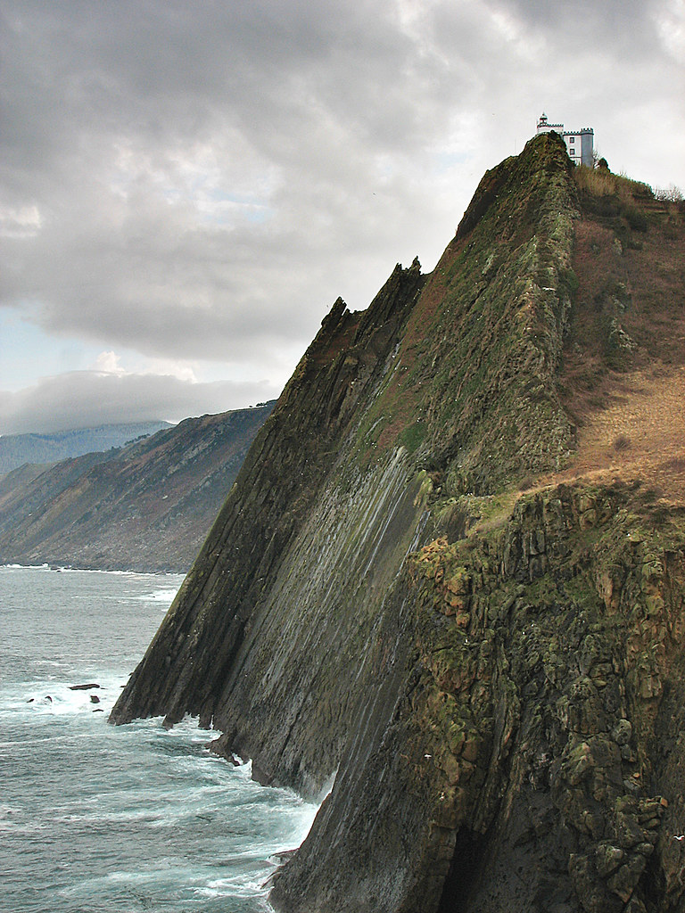

EL FARO DE LA PLATA
En el País Vasco podemos encontrar todo tipo de edificios y lugares de gran valor turístico, entre los que se encuentra el faro de la Plata, en el municipio de Pasajes. Este faro construido en el año 1855, se encuentra ubicado en el monte Ulía, lugar desde el cual suponía una gran ayuda para todos los barcos que accedían al puerto de Pasajes.
Situado muy cerca de Irún, punto de partida para muchos peregrinos del Camino de Santiago, es uno de los lugares más llamativos del noreste vasco. Además de por su privilegiada localización, su estilo arquitectónico y su gran altura llama la atención de los turistas, llegando a los 13 metros de altura solo por el soporte, y 153 metros si nos basamos en la altura focal.
El faro de la plata es uno de esos lugares que inspira amor y misterio, un rincón de la geografía vasca merecedor de mención en cualquier ruta entorno a la capital gipuzkoana. Ibon Martin, amante de su tierra y escritor donostiarra, es una de las muchas personas que ha sucumbido al encanto de este faro gipuzkoano, un encanto, que le ha llevado a convertir el Faro de la Plata en el escenario principal de su novela “El faro del silencio”.
El edificio tiene una construcción almenada que recuerda un castillo y está apoyado en el monte Ulía de tal forma que sólo tiene tres fachadas, siendo el propio monte quien completa el faro.
Ibon Martín
Origen del nombre
Parece ser que las piedras areniscas que forman el acantilado sobre el que se asienta el faro adquieren un tono plateado al ser humedecidas por el fuerte oleaje del cantábrico. Un color, que hizo que los marinos bautizasen el lugar como la punta de la Plata, dando lugar al posterior Faro de la Plata.
Un faro vinculado a la historia del Puerto de Pasajes
Igual que ocurre con el faro de Senokozuloa, este faro fue construido para ayudar a los trabajadores del Puerto de Pasajes. Este puerto tuvo un papel importante en la antigüedad ya que era desde allí donde se exportaban los minerales procedentes de las minas de Arditurri. Fue por este motivo que se ordenó a Carlos Campuzano su construcción, el cual eligió un gran farallón rocoso situado en la zona alta del monte Ulía.
Si bien la mayoría sabe cual era su función, no muchos conocen la característica historia de su nombre. Existen diferentes teorias sobre este, siendo la que dice que proviene de las piedras de color plateado que allí se encuentran la más plausible. También es curioso el motivo por el cual este faro está construido como si de un castillo se tratase, siendo para proteger la propia estructura debido a su característica ubicación..